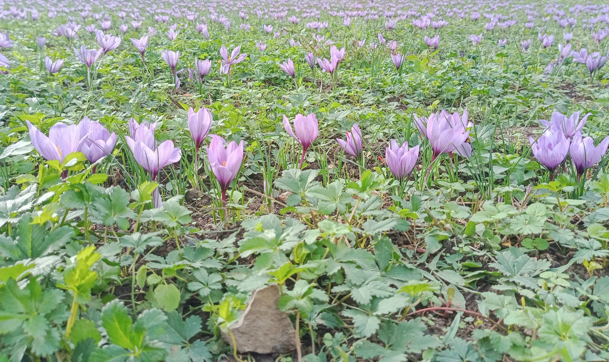
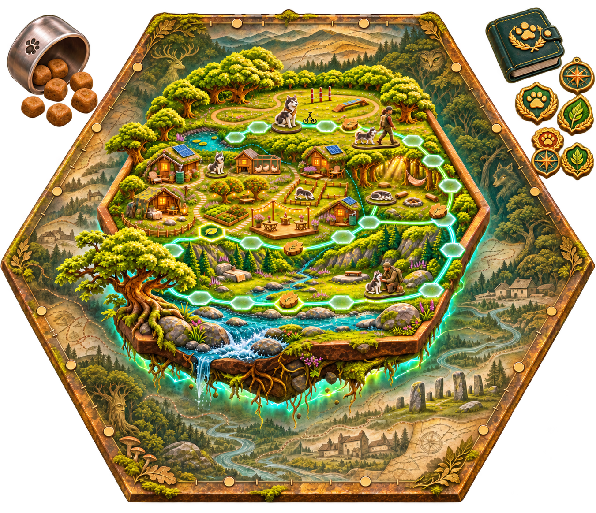
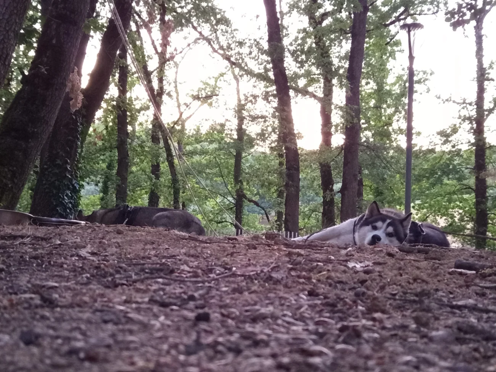
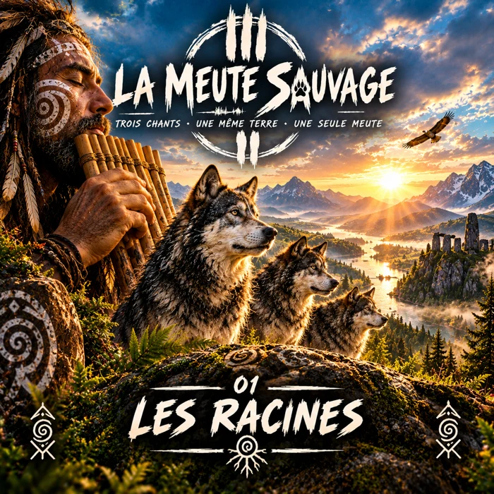
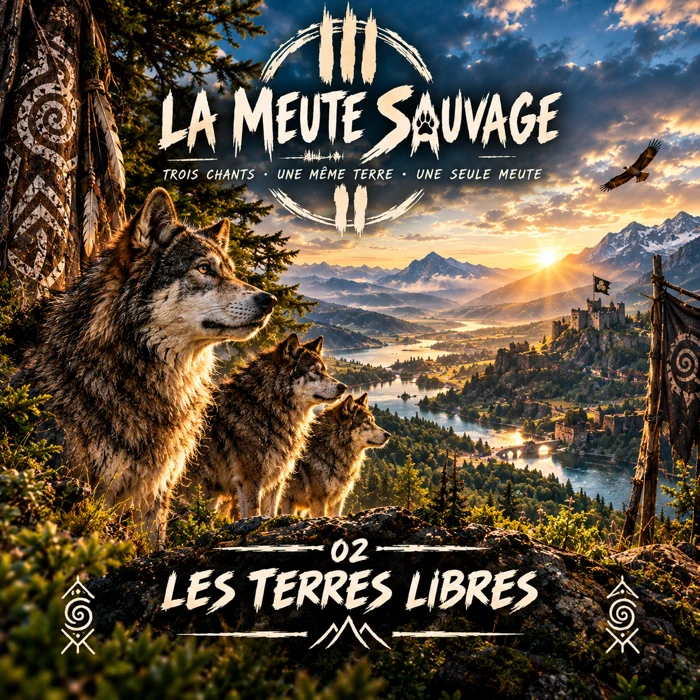
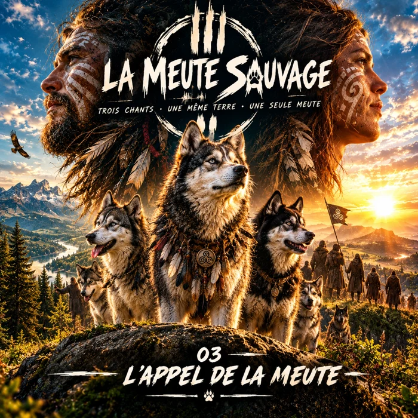
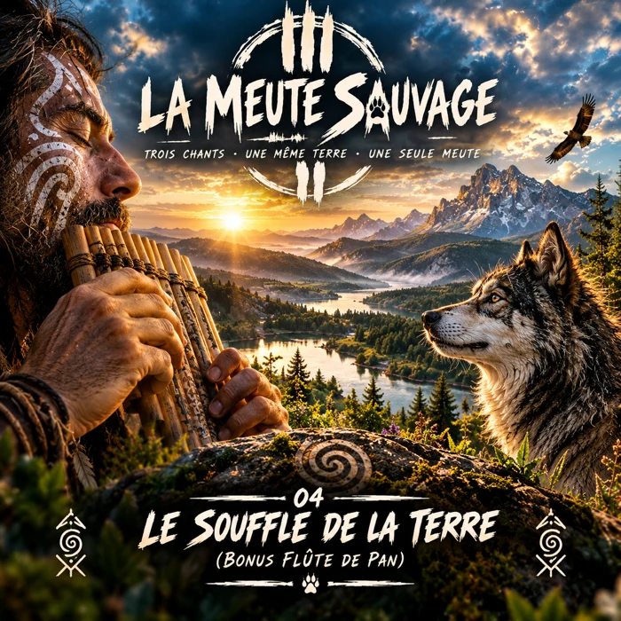

LE CADRE ASSOCIATIFÉcoJardin
Cinq activités : safran et essais, poulailler, potager, verger planté, cantine des oiseaux. Les fiches distinguent les réalisations, l’entretien, les reprises saisonnières et les projets.
Resna Terani Exagone
PARTIE OUVERTE Le terrain est réel. Les choix comptent.
Des terres acquises, une Base autonome, une source, des bois et des cultures. Dix huskys et dix gardiens. ÉcoJardin cultive et transforme ; la Meute relie les lieux et les personnes. L’IbèreTerre conduit sa vie intérieure et choisit ses alliances.
10 huskys · 10 gardiens · 5 activités ÉcoJardin.
De la terre aux liens : le territoire prend vie.

LES PORTES DU TERRITOIRE
Un atlas, des usages, une culture.
Chaque carte ouvre une partie du fonctionnement.
Carte, parcelles, ressources et installations.
Ouvrir l’atlas ↗02 / L’APPARTENANCEDéfinir ton lien, préparer ta demande.
Contact ↗03 / L’ACTIONDes cartes reliées aux activités réelles.
Lire les missions ↗04 / LE DEHORSÉchanges, compétences et liens entre lieux.
Proposer un lien ↗TERA / LE TERRITOIRE
Les parcelles ouvrent leurs usages.
La Base relie les activités et les équipements.
02 / LA VIE INTÉRIEURE
Source, solaire, habitat, soin du vivant.
Les circuits de la vie intérieure.
La continuité du lieu se prépare.
03 / LES ACTIVITÉS DU TERRITOIRE
Le vivant, les ressources et les personnes
ont leurs lieux et leurs liens.

LE CADRE ASSOCIATIFCinq activités : safran et essais, poulailler, potager, verger planté, cantine des oiseaux. Les fiches distinguent les réalisations, l’entretien, les reprises saisonnières et les projets.

ICI ET AU-DELÀDix huskys et dix gardiens : les soins, les activités et les liens qui continuent au-delà du lieu. Le QG des gamelles organise la découverte des recettes et les commandes groupées.
ÉCOJARDIN / LES ATELIERS DU VIVANT
Safran, poules, cultures, arbres et oiseaux.
Les ateliers du vivant ont leurs cartes.
LA BASE / TENIR LES LIEUX
Entretenir les passages, dessiner les contours,
préparer les usages.
Les équipements existants et les aménagements futurs restent distingués dans chaque fiche.
LUPA / LA COLLECTION DE LA MEUTE
Dix huskys, dix caractères. Chaque carte ouvre un portrait de la Meute. Les clips et les photos prolongent la collection sur le terrain.
LES CHANSONS DE LA MEUTE / CLIQUE POUR ÉCOUTER
LA MEUTE / LES GARDIENS & LES HUSKYS
Dix gardiens et dix huskys, reliés par les soins, les sorties, l’accueil et les activités. Xipoun, prince de la Meute, donne un visage à cet univers. Les cartes présentent chaque chien ; les passeports des gardiens portent leurs titres, leurs missions et leurs liens avec le territoire.
Le duo relie les personnes et les chiens, ici et au-delà du territoire.
04 / LES MISSIONS DE LA MEUTE
Les rôles s’organisent avec les personnes
et les besoins de la Meute.
Les cartes présentent les différentes relations avec la Meute : sorties, activités, accueil, parrainage et rencontres. Elles accompagnent le clip et décrivent ce que chaque mission recouvre.
Choisir une carte prépare une prise de contact. Le rôle et les engagements se définissent ensemble avant de commencer.
DARA / TON LIEN AVEC LE TERRITOIRE
Le comptoir rassemble les démarches : une question, une adhésion, une mission ou un accord à proposer. Le passeport en est le signe personnel dans l’univers de l’IbèreTerre.
DARA SEN / LE LIEN CHOISI
Ce formulaire prépare un message à relire et envoyer. Il n’attribue pas de statut.
06 / LES RELATIONS EXTÉRIEURES
Des liens choisis,
avec des engagements compréhensibles.
UN PROLONGEMENT PRÉVU
ÉcoSauvage, membre fondateur de la Confédération des Écos-Unis francophones. Des territoires autonomes se relient par des accords choisis : liberté, responsabilité, autonomie, coopération et respect du vivant.
LES SIGNES DU TERRITOIRE
La patte de husky inscrit l’animal aux côtés de l’humain. Le pavillon blanc porte la paix et la capacité de protéger les conditions de vie du lieu.
MIRA / LE RÉCIT D’ORIGINE
Avant le pavillon, il y a la route. Des familles en mouvement, des haltes, des métiers, des usages transmis. L’IbèreTerre inscrit son récit dans cette mémoire : trouver sa place, tenir le lieu, garder la main sur la suite.
Puis vient la prise de terre. Des parcelles acquises, une source, des bois, une Base. De quoi établir un point d’ancrage, organiser la vie et préparer une place aux générations suivantes. L’autonomie gagne du terrain par les actes.
Un pavillon blanc porte désormais l’empreinte de la Meute. L’humain et l’animal y prennent place ensemble. Le territoire rassemble ses moyens, conduit ses affaires et choisit ses alliances. La partie est ouverte : son histoire s’écrit sur le terrain.
Nir obli, nir pardona. Ai faits continuea, fin a extincta.
04 / LES VOIX DU PROJET
Faire territoire ensemble.
Deux formats pour comprendre le projet.
DÉCOUVRIR LE PROJET
Une première écoute pour découvrir ÉcoSauvage, ÉcoJardin et La Meute Sauvage.
PRENDRE PART À LA SUITE
Comprendre l’ensemble et les façons de s’impliquer : compétences, soutien et partenariats.
L’UNIVERS ANCESTRAL / LA BANDE-SON
Trois chansons et un bonus.
Les racines, les terres et l’appel de la Meute.
Le versant ancestral de l’univers ÉcoSauvage. Un imaginaire de nature et de liberté, à découvrir en musique.

CHAPITRE 01

CHAPITRE 02

CHAPITRE 03

LE TITRE BONUS
05 / DU SON, DES IMAGES, DU CARACTÈRE
Des activités, des cartes
et leurs récits en images.
LE COMPTOIR / DEMANDES & CONTACT
Question, adhésion, soutien, mission ou proposition : le formulaire permet de préciser la demande. Les modalités se conviennent ensuite selon son objet.
Velay · Forez · 900 m